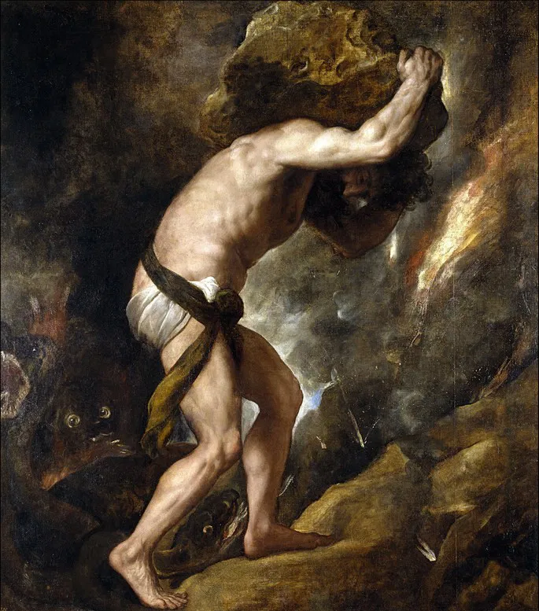

Eles ergueram a Torre de Babel
Esse universo doravante sem senhor não lhe parece nem estéril nem fútil.
Cada um dos grãos dessa pedra, cada clarão mineral dessa montanha cheia de noite, só para ele forma um mundo.
A própria luta em direção aos cimos é suficiente para preencher um coração humano.
É preciso imaginar Sísifo feliz.
Albert Camus